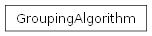

groupbuilder.core.algorithm.GroupingAlgorithm
- class groupbuilder.core.algorithm.GroupingAlgorithm(config)[source]
Algorithm for generating groups of people with unique combinations.
This class implements an algorithm to generate rounds of groups where: 1. Each round contains groups of equal size 2. Each person appears exactly once per round 3. The algorithm attempts to maximize the number of unique group combinations
before repeating any previously formed groups
It uses bitmasking for efficient group intersection checks and backtracking for finding valid group combinations.
__init__(config)Initialize the GroupingAlgorithm with the given configuration.
Get the most recently generated round.
Get all generated rounds.
Generate the next round of groups.
Get the number of remaining rounds that can be generated.
Get the maximum number of rounds that can be generated.
get_ops_needed(amount_people, group_size)Calculate an estimate of the number of operations needed to generate all possible unique round combinations, along with the number of combinations and an approximate amount of RAM needed based on an internal regression model.
- __init__(config)[source]
Initialize the GroupingAlgorithm with the given configuration.
- Parameters:
config (GroupConfig) – Configuration containing group parameters
Methods
__init__(config)Initialize the GroupingAlgorithm with the given configuration.
Generate the next round of groups.
Get all generated rounds.
Get the maximum number of rounds that can be generated.
get_ops_needed(amount_people, group_size)Calculate an estimate of the number of operations needed to generate all possible unique round combinations, along with the number of combinations and an approximate amount of RAM needed based on an internal regression model.
Get the number of remaining rounds that can be generated.
Get the most recently generated round.